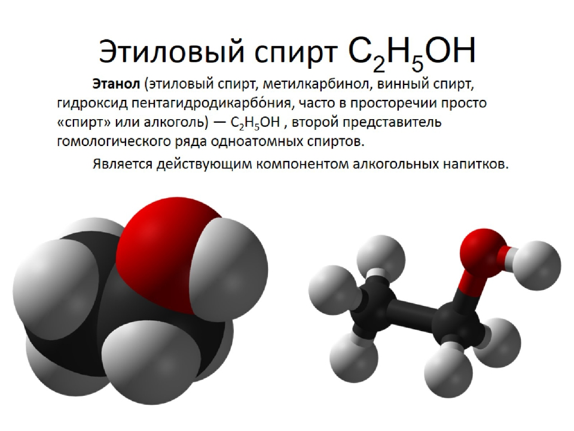

Применение спиртовых настоек в лечении различных заболеваний.

Используя спиртовые настойки, следует помнить, что они обладают сильным действием, поэтому нужно проявлять осторожность и не злоупотреблять ими. Необходимо стараться следовать всем указаниям по применению определенной настойки, чтобы добиться желаемого результата.
Правильно проведенный курс лечения окажет определенную помощь и укрепит здоровье.
Различные нарушения работы сердечно-сосудистой системы
Возникновение заболеваний этой группы связано с разными причинами. Они проявляются в виде учащенного сердцебиения, нарушений сердечного ритма, одышки, неприятных ощущений в области сердца и др.
Лечение
Чтобы укрепить сердечную мышцу, используют дубово-березовую настойку с соком лимона. Для ее приготовления следует взять 5 г сухой измельченной коры дуба и залить ее 300 мл горячей воды, после чего довести жидкость до кипения. Варить 30 минут, затем сырье нужно настоять не менее 10 минут, процедить и добавить сок 2 лимонов, а также по 500 мл меда, березового сока и водки. Все компоненты хорошо перемешать.
Настойку рекомендуется принимать 4 раза в день по 1 столовой ложке, при этом средство необходимо каждый раз запивать настоем из равных частей (по 50 г) омелы белой и чабреца.
Следующее средство, эффективно помогающее справиться с воспалением сердечной мышцы, — это лимонно-инжировая настойка.
Для ее приготовления понадобится 250 г лимонов. Из них необходимо удалить семена. Затем лимоны и 125 г инжира следует пропустить через мясорубку. К полученной массе добавить 250 мл меда и 50 мл водки, ингредиенты тщательно перемешать. Употреблять настойку следует после еды по 1 чайной ложке.
Очень действенным является лечение с помощью чесночной настойки. Для ее приготовления необходимо взять 350 г чеснока, измельчить и растереть. Затем взять 200 г полученной смеси с нижнего слоя, где больше сока, положить в стеклянную посуду и залить 200 мл 96 %-ного спирта. Плотно закрыв, настаивать в прохладном месте в течение 2 недель. Когда настойка будет готова, можно начать курс лечения. Чесночная настойка принимается каплями, которые добавляются в 0,25 стакана молока в соответствии с ниже приведенной схемой (табл. 1). Целебный раствор рекомендуется пить за 15–20 минут до еды.
Таблица 1
Схема приема чесночной настойки
Следующий курс лечения можно проводить через 6 лет. Эта настойка способствует очищению организма от жировых и известковых отложений, улучшает обмен веществ, делает сосуды более эластичными, что является профилактикой склероза, стенокардии и инфаркта миокарда. Помимо этого, данное лечение улучшает зрение и избавляет от шумов в голове, производит общее омоложение организма.
Еще одну настойку из чеснока можно приготовить следующим образом: 50 г чеснока мелко истолочь и залить 1 стаканом водки. Поставить смесь в теплое место и настаивать в течение 3 дней. После этого настойку можно принимать для лечения 3 раза в день по 8-10 капель, добавленных к 1 чайной ложке холодной воды.
Эту настойку можно сделать иначе. 300 г чеснока истолочь и положить в полулитровую бутылку, после чего залить спиртом. Настаивать в течение 3 недель. Для лечения принимать каждый день по 20 капель, добавленных к 0,5 стакана молока.
Можно приготовить настойку из плодов шиповника. Для этого надо взять плоды шиповника и мелко истолочь их, наполнив 2/3 полулитровой бутылки, после чего залить доверху водкой и поставить в темное место. Настаивать в течение 2 недель, каждый день взбалтывая бутылку. Для лечения принимать по 20 капель настойки, капнув ее на кусочек сахара.
Приготовить настойку коры и корней элеутерококка колючего. Кору и корни собирают весной во время сокодвижения или после увядания листьев и засушивают. Для приготовления настойки надо смешать сырье с водкой в соотношении 1: 1 и поставить смесь настаиваться до тех пор, пока она не приобретет темный цвет и специфический сладковатый запах. Для лечения ее пьют 3 раза в день перед едой по 30 капель.
Эту настойку особенно рекомендуется принимать при атеросклерозе с поражением аорты и коронарных сосудов. Регулярное ее употребление приводит к снижению
содержания холестерина в крови, уменьшению утомляемости, улучшению зрения и слуха, повышению сопротивляемости организма и умственной работоспособности.
Прополисно-чесночная настойка рекомендуется при атеросклерозе. Для ее приготовления нужно взять 200 г чеснока, измельчить и положить в бутылку из темного стекла, после чего залить 200 мл 96 %-ного спирта и поставить в темное место. Настаивать в течение 2 недель. Затем настой следует профильтровать и добавить 50 г меда и 100 мл 20 %-ной спиртовой настойки прополиса. Все тщательно смешать и поставить настаиваться еще на 3 дня.
Принимать настойку 3 раза в день за 30 минут до еды каплями, добавляя их в 60 мл молока по нижеприведенной схеме (табл. 2).
После проведенного курса следует сделать перерыв в лечении на 5 месяцев, после чего его можно повторить.
Настойка травы руты душистой приготовляется из 100 г сухой измельченной травы, которая заливается 0,5 л водки. Смесь настаивается в течение 10 дней в темном месте. Для лечения принимать настойку 3 раза в день по 10 капель, разбавленных в 1 столовой ложке воды.
Таблица 2
Схема приема прополисно-чесночной настойки
При атеросклерозе, гипертонии, нарушении сна, сердцебиении и головокружении рекомендуется смесь спиртовых настоек прополиса и боярышника, приготовленная в соотношении 1: 1. Ее принимают 3 раза в день за 30 мин до еды по 20–30 капель.
Заболевания среднего уха
Процесс воспаления среднего уха можно остановить, применив спиртовую настойку прополиса. К ней необходимо добавить растительное масло в пропорции 1: 2 и закапывать в больное ухо по 7-10 капель взрослому человеку и 3–5 — ребенку.
Закапывание проводить 3–4 раза в день.
В этих целях можно использовать марлевый тампон, пропитанный спиртовым раствором прополиса. Его следует менять ежедневно.
С помощью спиртовой настойки прополиса можно справиться с мокнущей экземой ушной раковины. Для этого настойкой следует смазать все пораженное место, после чего нанести тонкий слой прополисной мази. Выздоровление, как правило, наступает через несколько дней.
Спиртовой раствор прополиса помогает при старческой тугоухости. Для этого в него добавляют растительное масло (1: 2) и пропитывают этим средством жгут из марли.
Затем его вводят в слуховой проход и оставляют на сутки. На следующие 24 часа готовят новый жгут. Процедуру повторяют 15–20 раз.
Заболевания органов пищеварительной системы
Среди взрослых очень часты болезни ЖКТ. Причинами являются некачественные и вредные продукты и препараты, принимаемые внутрь. Частое употребление алкоголя и курение отравляют организм и пагубно влияют на микрофлору кишечника. В результате возникает множество болезней.
Страдают также и другие органы: печень, почки, сердце и т. д. Неразборчивость в питании, его несбалансированность и чрезмерное количество — вполне обычное явление в наши дни. Многочисленные стрессы и нервные расстройства также влияют на работу ЖКТ.
Дисбактериоз
Дисбактериозом называют нарушение нормального состава микрофлоры кишечника, что ведет к развитию среды, благоприятной для грибков рода Candida, а также патогенной и условно-патогенной флоры. Патогенными микробами являются те, которые способны вызывать болезни.
Подсчитано, что масса всех микробов, живущих в организме одного человека, составляет около 3 кг.
Микрофлору ЖКТ образуют многочисленные бактерии, которые выполняют различные полезные функции:
— не допускают проникновения в организм человека болезнетворных бактерий и их размножения;
— активно участвуют в процессе пищеварения и всасывания;
— способствуют вырабатыванию витаминов и органических кислот, улучшающих флору кишечника;
— значительно снижают уровень канцерогенов;
— укрепляют иммунитет организма.
Основную роль среди полезных микроорганизмов играют бифидобактерии, бактероиды
и молочнокислые бактерии. Уменьшение их количества в кишечнике, приводящее к повышению уровня патогенных бактерий, и является дисбактериозом.
Причинами этого заболевания у взрослых людей могут быть:
— хронические заболевания ЖКТ;
— инфекционные заболевания;
— алкоголизм;
— переедание или недоедание;
— несбалансированное питание;
— недостаток витаминов;
— неблагоприятная экологическая обстановка;
— возрастные и сезонные изменения;
— чрезмерные физические нагрузки и переутомление.
Желательно лечить дисбактериоз на стадии, пока он не вызвал заболевание еще какого-нибудь органа. На этой стадии различают 2 вида нарушений работы желудка и кишечника. В первом случае наблюдаются:
— понижение аппетита;
— метеоризм;
— чувство тяжести в области печени;
— поносы или запоры.
Во втором случае наблюдаются следующие признаки:
— изжога;
— спазмы в животе;
— застой желчи в желчном пузыре;
— запоры.
Лечение
Для лечения дисбактериоза проводят очищение ЖКТ от болезнетворной флоры с помощью дезинфицирующих препаратов, убивающих патогенные бактерии, и активированного угля, который хорошо адсорбирует продукты распада и токсины, продуцируемые болезнетворными бактериями, после они выводятся из кишечника. После очистки ЖКТ с помощью адсорбента необходимо принимать лекарственные препараты и употреблять пищевые продукты, содержащие бифидо- и лактобактерии.
При диарее полезно принимать 2 раза в день по 2 столовые ложки спиртовой настойки полыни (2 столовые ложки измельченной полыни на 0,5 л спирта, настаивать 24 часа.). При неинфекционных поносах рекомендуется настойка из перегородок скорлупы грецких орехов: 200 г грецких орехов расколоть и вынуть из них перегородки, разделяющие ядра, после чего положить их бутылку и залить 0,5 л спирта. Настаивать в течение 2–3 дней. Для лечения поноса принимать эту настойку 3–4 раза в день от 6 до 10 капель, разбавленных в рюмке теплой воды. Хорошо при диарее помогает также спиртовая настойка прополиса. Ее следует принимать по 25 капель, разбавленных в 0,5 стакана воды.
При запорах рекомендуется принимать луковую настойку. Чтобы ее приготовить, надо на 2/3 заполнить полулитровую бутылку измельченным луком и доверху долить спиртом или водкой. Настаивать в теплом или солнечном месте в течение 10 дней.
Язвенная болезнь
Язвенной болезнью желудка и двенадцатиперстной кишки называют хроническое заболевание, сопровождающееся образованием дефектов слизистой этих органов. Ее причиной может быть повышенное образование соляной кислоты, которая вызывает воспаление слизистой и приводит к появлению язвы. Кроме того, болезнь может возникнуть в результате того, что слизистая желудка теряет способность защищаться от разъедающего действия желудочного сока.
Симптомами язвы желудка являются боли в подложечной области, появляющиеся через 20–30 минут после еды. При язве двенадцатиперстной кишки боли могут появляться и натощак, по ночам, а при приеме пищи они затихают. Помимо этого, болезнь сопровождается тошнотой, изжогой, а при кровоточащей язве — появлением черного стула.
При проведении курса лечения язвы очень важно правильно питаться. Прием пищи должен производиться часто, через одинаковые промежутки времени и в небольшом количестве. Диета должна исключать острую, соленую, жареную, жирную, холодную и горячую пищу.
Лечение
Для лечения язвы рекомендуется в качестве болеутоляющего и противовоспалительного средства употреблять 10 %-ную спиртовую настойку прополиса.
Ее принимают 3 раза в день перед едой по 40–60 капель в 0,5 стакана молока. Курс лечения проводится в течение 1 месяца.
При сильных желудочно-кишечных спазмах, обострении язвы, воспалении толстой кишки рекомендуется принимать 25 %-ную спиртовую настойку корня крестовника широколистного 3 раза в день перед едой по 30–40 капель на 0,5 стакана теплой кипяченой воды.
Эпилепсия
Эпилепсией называют нарушение функций головного мозга, сопровождающееся кратковременной потерей сознания и припадками. Различают эпилептическую болезнь и симптоматическую эпилепсию. Последняя возникает в результате очагового заболевания головного мозга. Характерными симптомами заболевания являются припадки, внезапные изменения настроения (проявление злобы и раздражительности), изменение характера, слабоумие. Обычно эпилепсия начинается в детском возрасте, реже она возникает у взрослых в результате травмы или запущенного воспалительного заболевания.
Эпилептикам показана специальная диета, включающая сырую вегетарианскую пищу. Полезны также частые голодания: по 3 дня через каждые 10 дней.
Лечение
При эпилепсии рекомендуется принимать 10 %-ную спиртовую настойку цветков арники горной. Она принимается 3–5 раз в день перед едой по 0,5 чайной ложки, добавленных в 80 мл теплой кипяченой воды.
В качестве противосудорожного и болеутоляющего средства при эпилепсии рекомендуется 10 %-ная спиртовая настойка листьев и плодов болиголова крапчатого. Ее принимают 2–3 раза в день перед едой по 7—10 капель на 60 мл теплой воды. При этом следует соблюдать осторожность, поскольку данная настойка очень ядовита.
Кожные заболевания
Экзема
Экзема — это воспалительное заболевание кожи, для которого характерны разнообразные высыпания. Различают истинную, профессиональную, себорейную и микробную экземы. Протекает длительно, часто с рецидивами. При экземе наблюдается повышение чувствительности кожи к аллергенам, причинами которого могут быть стрессы, заболевания печени, ЖКТ и другие болезни. Чаще всего экзема поражает лицо и верхние конечности.
При острой истинной экземе очаговая поверхность отекает и краснеет. На ней появляются множественные мелкие папулы и пузырьки, которые вскрываются и превращаются в микроэрозии, выделяющие серозную жидкость. В течение этого процесса больной испытывает зуд и жжение. При подострой истинной экземе очаги поражения имеют синюшно-розовый цвет и умеренную отечность. Эрозия также протекает умеренно, зуд и жжение слабее, чем при острой форме, однако болезнь длится дольше — 3–6 месяцев.
Профессиональная экзема похожа на истинную, только в основном локализуется на кистях, предплечьях, шее, а ее возбудителем является определенный профессиональный аллерген. Болезнь в этой форме протекает легко и быстро излечивается. Себорейная экзема появляется на коже лица, волосистой части головы, спины и области груди. Причиной возникновения болезни является нарушение салоотделения. Кожа в очагах поражения приобретает желтоватый цвет, мокнутие умеренное, наблюдаются наслоения жирных чешуек. Микробная экзема охватывает в основном конечности, области вокруг ран, язв и свищей. Причиной болезни являются грибковые поражения кожи. Очаги микробной экземы имеют четкую границу.
Лечение
При острой и хронической формах экземы рекомендуется принимать 10 %-ную спиртовую настойку из березовых почек. Принимается настойка 3–4 раза в день перед едой по 20–30 капель на 1 столовую ложку теплой кипяченой воды. Этим же препаратом можно протирать пораженные места на коже.
Основным симптомом хронической формы истинной экземы является уплотнение кожи. Отеки и мокнутие происходят периодически. Однако протекает болезнь в течение длительного времени, многократно обостряясь.
Одновременно проводится лечение сопутствующих заболеваний и устранение внешних раздражающих воздействий.
Диатез
При этой болезни поражается кожа ребенка, но причиной ее считается нарушение деятельности пищеварительного тракта. Кожные высыпания, как правило, появляются после приема той или иной пищи. Поскольку основной пищей младенца является молоко матери, то ей приходится следить за своим рационом, чтобы не вызвать диатез у ребенка.
Для смазывания больных мест применяют спиртовую настойку корня родиолы розовой (золотой корень), спиртовую настойку семян софоры японской, спиртовую настойку эвкалипта шаровидного. Смазывание нужно производить 2–3 раза в день.
Мастит (грудница)
Маститом называют воспаление молочной железы. Оно возникает обычно из-за трещин на соске у кормящих матерей. Заболевание сопровождается болями, молочная железа разбухает, становится плотной и тугой, а также болезненной. Кожа вокруг соска краснеет и лоснится. Наблюдается повышение температуры.
При возникновении заболевания необходимо срочно обратиться к врачу, чтобы не было осложнений. При этом нельзя давать грудь ребенку, а молоко надо сцеживать и выливать.
Лечение
При мастите рекомендуется применять настойку плодов софоры японской. Для ее приготовления надо взять 1–2 столовые ложки (10–20 г) истолченных плодов софоры и залить их 0,5 л водки. Настаивать в теплом месте в течение 10 дней, периодически взбалтывая. Готовой настойкой смазывают трещины на сосках.
Желчно-каменная болезнь
Под желчно-каменной болезнью понимают заболевание, сопровождающееся образованием камней в желчных протоках, желчном пузыре или печени. Оно возникает в результате нарушения обменных процессов. Развитию болезни способствуют нарушение обмена солей и холестерина, инфекции, попадающие в желчевыводящие пути, застой желчи. Встречается чаще у женщин в возрасте 35–60 лет.
Желчные камни различаются по своему составу и бывают 3 основных видов. Пигментные камни состоят из билирубина и солей кальция; холестериновые камни представляют собой отложения холестерина; смешанные состоят из солей кальция, холестерина и билирубина. Наиболее часто встречаются камни из холестерина.
Развитию желчно-каменной болезни способствуют злоупотребление жирной пищей, такие заболевания, как подагра, сахарный диабет, ожирение, а так же инфекция желчевыводящих путей, атеросклероз, поражение печени, усиленный гемолиз (процесс распада эритроцитов).
Заболевание сопровождается печеночной коликой (боль в правом подреберье), а также расстройствами пищеварения. Болевые ощущения могут не появляться, если камни располагаются на дне желчного пузыря. При их перемещении, напротив, возникает сильный болевой приступ, возникающий из-за спазма протоков или желчного пузыря. Колика может наблюдаться при приеме жирной пищи, переохлаждении, физическом или нервном перенапряжении. Боль часто бывает очень сильной, иногда она может привести к болевому шоку.
Характер боли режущий или колющий. Ее локализация — все правое подреберье. Она иррадиирует (отдает) в область правой лопатки, плеча, шеи, челюсти. Потом она локализуется в подложечной области и в месте расположения желчного пузыря. В некоторых случаях боль может спровоцировать приступ стенокардии.
Как правило, приступ боли внезапно начинается и также внезапно заканчивается. Часто это происходит в ночное время.
Иногда она имеет затяжной характер в связи с тем, что общий желчный проток перекрывается; а при длительном спазме может появиться желтуха.
Часто приступ сопровождается повышением температуры, могут возникнуть тошнота и рвота. Эти симптомы сразу исчезают, как только боль утихнет. Приступ может продолжаться в течение нескольких минут, но может длиться часами. Очень редко боль сохраняется несколько дней. Приступы могут повторяться с различной частотой.
Состояние больного довольно быстро нормализуется, как только исчезают болевые ощущения.
В некоторых случаях проявления обострения желчно-каменной болезни сводятся к диспепсическому синдрому, при этом возникает чувство тяжести в области солнечного сплетения, появляется отрыжка, иногда — рвота. Боли в области правого подреберья при этом могут быть слабо выраженными, и только пальпация живота позволяет их выявить.
Развитие болезни сопровождается клиническими проявлениями осложнений — холангита (воспаление желчных протоков) или острого холецистита (воспаление желчного пузыря), признаками закупорки желчного протока в результате сдвига камней.
У больных желчнокаменной болезнью на поверхности верхнего века и на ушах появляются специфические бляшки, обнаруживаются болезненные ощущения и напряжение при исследовании брюшной стенки в области подреберья, характерно также вздутие живота.
В результате закупорки пузырного протока развивается водянка желчного пузыря. Она сопровождается резкими болями. После того как они прекратятся, можно прощупать увеличенный желчный пузырь. Водянка вызывает ощущение тяжести в области правого подреберья.
При присоединении инфекции наблюдается ухудшение общего состояния, повышение температуры тела, боли возобновляются.
Если желчный проток оказывается полностью закупорен, появляется желтуха, изменяется окраска кала, наблюдается увеличение печени; она становится более плотной и болезненной.
В случае застоя желчи в желчных путях и желчном пузыре может начаться воспалительный процесс.
При желтухе метод холецистографии противопоказан.
Лечение
При возникновении колики показана обязательная госпитализация.
Рекомендуется на живот прикладывать холод, однако, иногда более действенным оказывается применение грелки.
При консервативном лечении все усилия должны быть направлены на прекращение воспалительного процесса, при этом нужно добиться оттока желчи из желчного пузыря и улучшения его двигательной функции.
Ультразвуковое исследование брюшной полости, холангиография и холецистография позволяют выявить наличие камней.
Для растворения камней в желчном пузыре рекомендуется спиртовая настойка лука. Ее можно приготовить, нарезав лук и наполнив им 0,5 полулитровой бутылки. Затем залить доверху спиртом или водкой и настаивать в теплом месте в течении 10 дней. Когда настойка будет готова, ее нужно процедить и принимать 2 раза в день перед едой по 1–2 столовые ложки.
Острые респираторные заболевания
Острое респираторное заболевание (ОРЗ) представляет собой процесс поражения верхних дыхательных путей человека.
ОРЗ развивается при попадании в организм болезнетворных микроорганизмов, число разновидностей которых может составлять несколько сотен. Все они делятся на 11 групп:
— вирусы гриппа;
— реовирусы;
— вирусы парагриппа;
— аденовирусы;
— энтеровирусы;
— вирус обычного герпеса;
— риновирусы;
— стафилококки и стрептококки;
— коронавирусы;
— микоплазмы;
— вирус респираторно-синцитиальный.
Чаще всего от острых респираторных заболеваний страдают дети. Инфекция в основном проникает в организм воздушно-капельным путем. Заражение происходит во время близких контактов с больным человеком.
Основные симптомы заболевания: кашель, насморк, повышение температуры тела, общая слабость и апатия. Длительность заболевания — около 1 недели, а при наличии каких-либо осложнений — 3–4 недели.
Лечение
При лечении данных заболеваний рекомендуется как можно раньше начать прием лекарственных средств и применение лечебных процедур, что поможет значительно ускорить выздоровление.
Хорошим средством при простуде является настойка полыни: 2 столовые ложки измельченной полыни залить 0,5 л спирта, настаивать не менее 24 часов. Принимать по 1 столовой ложке 3 раза в день и перед сном.
Рекомендуется также прием настойки родиолы розовой (золотого корня). Для ее приготовления 50 г сухого корня заливают 2 стаканами водки, настаивают 7 дней в темном месте, затем процеживают. В 100 мл горячей воды вливают 1 чайную ложку настойки. Полученным раствором полощут горло 10–15 раз непрерывно, затем после небольшого перерыва (10–15 минут) повторяют полоскание.
При насморке хорошо помогает смесь спиртовой настойки прополиса с соком хрена и растительным маслом (1: 1: 3). В ноздри нужно закапывать по 3–5 капель.
При первых симптомах гриппа весьма эффективна настойка прополиса на спирту. Ее принимают, растворив 15–20 капель в 50 мл теплой воды или зеленого чая. Данным средством также можно полоскать горло, причем эффективность возрастет при смазывании миндалин и глотки составом, содержащим 50 г растительного масла и 20 г экстракта прополиса на спирту.
Помимо этого, при гриппе рекомендуется также прием внутрь чесночной настойки по 1 капле на язык. Настойка готовится из 2 измельченных головок чеснока и 250 мл водки. Применять в течение 3–4 дней.
Ангина
Ангиной называют инфекционное заболевание, которое сопровождается воспалительным поражением нёбных миндалин. Возникает заболевание чаще всего вследствие переохлаждения организма в сырую холодную погоду. Ангина может протекать в легкой и тяжелой форме. Особую опасность представляет возможность возникновения осложнений.
Заболевание ангиной характеризуется появлением следующих симптомов:
— повышение температуры до 38–40 °C;
— озноб;
— головная боль;
— лихорадка, длящаяся 4–5 дней. Выздоровление наступает быстрее и болезнь протекает легче, если, наряду с медикаментозными препаратами, использовать средства, содержащие лимон.
Лечение
При ангине необходимо вызвать врача, который назначит соответствующее лечение, в противном случае заболевание может привести к развитию различных осложнений.
Лечение осуществляется с помощью настойки родиолы розовой и прополиса на спирту.
Бронхиальная астма
Бронхиальной астмой называется хроническое заболевание, которое характеризуется регулярными приступами удушья, вызванными спазмами бронхов.
Бронхиальная астма сопровождается сильной одышкой и кашлем. Дыхание больного часто затруднено.
Основная причина возникновения бронхиальной астмы — изменение работы бронхов, когда снижается их чувствительность и реактивность. Иногда астма передается по наследству. В этом случае положение больного может усугубиться за счет воздействия на его организм неблагоприятных факторов внешней среды.
Бронхиальная астма может иметь и аллергический характер. Также она возникает в результате проникновения в организм бактерий, вирусов или грибов. Толчком к развитию бронхиальной астмы могут также стать некоторые инфекционные заболевания, к которым относятся синусит, хронический бронхит, хроническая пневмония и ринит.
Сильными аллергенами, способными вызвать приступ астмы, являются пыльца растений, бытовая пыль, некоторые лекарственные препараты, шерсть животных, сено, пищевые добавки, шоколад, сильные запахи и т. д.
Лечение
Весьма эффективным средством лечения данного заболевания является спиртовая настойка имбиря. Для ее приготовления надо взять 1 корень имбиря, вымыть его, очистить и натереть на мелкой терке, после чего засыпать в полулитровую бутылку. Затем доверху наполнить ее спиртом. Смесь настаивать в теплом или солнечном месте в течение 2 недель, иногда встряхивая. Готовая настойка приобретает желтый цвет, ее надо процедить и дать отстояться. После этого можно принимать 2 раза в день после еды по 1 чайной ложке настойки, разведенной в 0,5 стакана воды.
Если бронхиальная астма возникла в результате аллергической реакции организма на раздражитель, проявления этого заболевания носят сезонный характер.
Во время лечения нельзя употреблять мясо. Ноги нужно держать в тепле, а перед сном можно сделать теплую ножную ванну. Время от времени нужно делать небольшой перерыв в лечении, а потом продолжать.
Гипертония
Гипертонией называют заболевание, при котором наблюдается повышенное артериальное давление. При этом происходит сужение просвета артерий, что приводит к затрудненному продвижению крови по сосудам. Стенки сосудов испытывают повышенное давление крови. Гипертония обычно возникает у людей, достигших 40-летнего возраста. Чаще болеют женщины.
Лечение
При гипертонии полезна овощная настойка. Для ее приготовления надо смешать 250 мл морковного сока, 250 мл свекольного сока, 150 г клюквы, 150 мл спирта и 200 г меда. Полученную смесь настаивать в темном прохладном месте в течение 3 дней. Принимать 3 раза в день по 1 столовой ложке.
Для снижения кровяного давления рекомендуется также следующая настойка. Взять 3 кг репчатого лука и выжать из него сок, после чего смешать с 500 г меда. Добавить 25 перегородок грецких орехов и полученную смесь залить 0,5 л водки. Настаивать в прохладном месте в течение 10 дней. Готовую настойку принимать 2–3 раза в день по 1 столовой ложке.
Еще одна лечебная настойка готовится следующим образом: по 200 мл свекольного и морковного соков смешать с 10 мл лимонного сока и 200 г меда, после чего к полученной смеси добавить 100 мл спирта. Настаивать в темном прохладном месте в течение 3 дней, время от времени встряхивая смесь. Готовую настойку принимают 3 раза в день перед едой по 1 столовой ложке. Курс лечения рассчитан на 1,5–2 месяца.
Следующее средство используют при таких проявлениях гипертонии, как повышенная нервная возбудимость и бессонница.
Приготовить спиртовую настойку корня пиона уклоняющегося (марьин корень), для чего взять 100 г измельченного корня и настаивать его в 0,5 л спирта в течение 2 недель. Принимать 3 раза в день по 30–40 капель. Курс лечения продолжается 30 дней. Настойка противопоказана при повышенной кислотности желудочного сока.
Гипотония
Гипотонией называют заболевание, при котором наблюдается пониженное артериальное давление. Проявления заболевания иногда встречаются и у здоровых людей. В отдельных случаях оно может принимать патологическую форму, для которой характерны неожиданные обмороки. При некоторых заболеваниях общего характера (язве желудка, малокровии, нарушениях работы желез внутренней секреции, туберкулезе) гипотония может приобретать хроническую форму. Наиболее характерные симптомы гипотонии:
— плохое самочувствие;
— головные боли;
— головокружение, вялость, общая слабость;
— потемнение в глазах.
Лечение
При гипотонии рекомендуется спиртовая настойка плодов лимонника китайского. Она приготавливается в пропорции 1: 10. Принимают 2 раза в день (утром и в обед) перед едой по 30–40 капель.
Различные недомогания
Помимо вышеперечисленных заболеваний, спиртовые настойки можно использовать для улучшения общего состояния при самых различных недомоганиях.
Зубная боль
Чаще всего она возникает при кариесе — заболевании зубов, характеризующемся деминерализацией твердых тканей зуба и последующим их разрушением, в результате чего образуется полость. Причинами болезни являются неправильное питание и плохой уход за зубами.
На начальной стадии кариес проходит бессимптомно и обнаруживается только при тщательном осмотре. Эмаль становится матовой, возникает белое пятно в месте поражения. Однако зуб пока не реагирует на холодное или горячее. Но при дальнейшем развитии болезни возникает боль от попадания на зуб сладкого, кислого или соленого. Позже появляется и реакция на температурные перепады. Кариозная полость на этой стадии становится заметной и самому больному.
Лечение
Лечение кариеса проводится стоматологом. При зубной боли рекомендуется продолжительное полоскание спиртовой настойкой корня аира болотного, которую можно купить в аптеке.
Головная боль
Головная боль является одним из основных симптомов целого ряда различных заболеваний.
Человеческий мозг лишен болевых рецепторов, однако тонкая прослойка отделяющая его от костей черепа их имеет. Болевые рецепторы также присутствуют в тканях сухожилий и мышц скальпа, которые резко сокращаются в ответ на физические или психологические раздражители. Удар по голове или сильный стресс способны вызвать длительную мигрень. Таким образом, головная боль является результатом травмы или перенапряжения мышечной оболочки черепа. Такого рода неприятные ощущения чаще всего испытывают женщины.
Головная боль может быть сильной или слабой, пульсирующей или постоянной в зависимости от причин, вызвавших ее. Она может усилиться при курении, потреблении алкогольной продукции, переутомлении и прослушивании слишком громкой музыки.
Головная боль нередко возникает в результате воздействия на организм человека вирусов и бактерий, которые провоцируют развитие инфекционных заболеваний (грипп, воспаление легких) и токсинов (алкоголь, никотин). Пониженное или повышенное давление, многие воспалительные процессы в ротовой полости (кариес, пульпит, пародонтоз) или придаточных носовых пазухах (гайморит) также сопровождаются болевыми ощущениями.
Лечение
При головных болях рекомендуется использовать следующие средства.
Настойка из кориандра приготавливается из равных частей семян кориандра посевного, листьев мелиссы лекарственной, листьев мяты перечной. 200 мл смеси заливается 100 мл 96 %-ного этилового спирта и 20 мл кипяченой воды. Настаивать нужно в течение суток, после чего процедить и отжать сырье. Для лечения головной боли нужно смочить настойкой платок и приложить к вискам и затылку.
При головной боли и головокружении также рекомендуется спиртовый настой соцветий клевера лугового. Он приготавливается из 50 г соцветий и 0,5 л водки. Смесь настаивается в течение 10 дней. Принимать следует 3 раза в день перед едой по 1 чайной ложке в течение 3 месяцев. Через каждый месяц нужно делать перерыв на 10 дней.
Для лечения и профилактики простуды и ангины, а также для хорошего общего самочувствия рекомендуется принимать следующую настойку: 50 г измельченной полыни залить 0,5 л водки и настаивать не менее 24 часов. Принимать по 1 столовой ложке 3 раза в день и перед сном.
Весьма эффективен и следующий рецепт приготовления лечебного напитка. В духовой шкаф необходимо поместить 3 крупных лимона на 30 минут, затем выжать сок, добавить 30 мл спирта, 60 г меда и долить 200 мл горячей воды. Все ингредиенты следует тщательно перемешать. Настойку рекомендуется принимать по 1 столовой ложке через каждый час.
Панариций
Это гнойное воспаление тканей пальца, которое возникает в результате проникновения инфекции через проколы, трещины, ссадины или порезы. Если вовремя не начать лечение, то болезнь может привести к тяжелым последствиям.
Лечение
Сильным антисептическим действием, необходимым для лечения панариция, обладает 20–30 %-ная спиртовая настойка цветков календулы обыкновенной, а также 30 %-ный спиртовая настойка из молодых (клейких) листьев грецкого ореха. Настойки используют в качестве припарок и ванночек. Можно также сделать повязку на пораженное место с использованием 5-10 %-ной спиртовой настойки прополиса.
Подагра
Подагрой называется нарушение обмена веществ в организме, сопровождающееся отложением мочекислых солей в тканях суставов, хрящей и костей, в результате чего происходит их разрушение. Обычно этой болезнью страдают мужчины. Причиной возникновения подагры могут быть поражения печени или почек, при которых происходит выведение из организма мочевой кислоты.
Болезнь протекает медленно и сопровождается воспалительными процессами в суставах и костях с постепенным их разрушением и нарушением функций. В основном подагра поражает большие пальцы ног и мелкие суставы кистей рук.
Больные подагрой должны соблюдать строгую диету: отказаться от употребления спиртных напитков, фасоли, щавеля, шпината, редиска, жиров, мяса, хлеба и пряностей. Следует также ограничить употребление сахара. Основными продуктами питания должны стать кисломолочные продукты.
Лечение
Для лечения можно использовать 20 %-ную спиртовую настойку корней бедренца камнеломкового. Она принимается 3–4 раза в день перед едой по 30 капель на 1 столовую ложку теплой кипяченой воды.
При подагре полезна также чесночная настойка. Для ее приготовления надо взять 2 большие головки чеснока, очистить и растолочь, после чего залить 250 мл водки и поставить в теплое место. Настаивать в течение 2 недель, каждый день взбалтывая. Принимать настойку 3 раза в день за 15 минут до еды по 30 мл на 100 мл холодной кипяченой воды. Курс лечения проводится в течение 1–1,5 месяца.
Радикулит
Данное заболевание характеризуется поражением корешков спинномозговых нервов. Первичное поражение является инфекционным или токсическим, а вторичное обуславливается дегенеративными, травматическими, воспалительными, опухолевыми процессами в позвоночнике или окружающих тканях. Самым распространенным типом радикулита является пояснично-крестцовый.
Лечение
При радикулите рекомендуется делать растирания больных мест с использованием 40 %-ной спиртовой настойки свежих листьев дурмана вонючего или 25 %-ной спиртовой настойки семян горчицы сарептской. Они обладают болеутоляющим эффектом.
Полезно также следующее средство. Смешать в равных количествах мед и растительное масло, полученную смесь настоять на 20 %-ной спиртовой настойке прополиса в течение 6 дней. Готовое лекарство густо нанести на горчичники и приложить к больному месту, закрепив их бинтом или повязкой.
Ревматизм
Это заболевание бывает аллергического, инфекционного, иммунологического или наследственного характера. Сопровождается воспалительными процессами. Ревматизм поражает соединительные ткани сердца, сосудов, суставов, кожи, иногда — легких, почек и пищеварительных органов. Часто болезнь возникает как осложнение после ангины и скарлатины. Больные ревматизмом должны соблюдать вегетарианскую диету. Мясо приводит к образованию в организме мочевой кислоты, которая оседает в соединительных тканях и причиняет сильную боль. По этой причине больному необходимо отказаться от мяса, а также от сыра, яиц и рыбы.
Лечение
При ревматизме рекомендуется принимать спиртовую настойку почек березы белой.
Для приготовления надо взять 50 г почек, измельчить их и залить 0,5 л водки. Настаивать смесь в течение 10 дней. Принимать 3–4 раза в день перед едой по 1 чайной ложке на 100 мл теплой кипяченой воды. Помимо приема внутрь, настойку можно использовать для натираний больных мест.
Туберкулез легких
Туберкулезом легких называют инфекционное заболевание, в процессе развития которого поражаются легкие.
Туберкулез проявляется в нескольких формах: острой, подострой и хронической.
Для заболевания характерно пофазовое развитие. Оно может локализоваться в различных сегментах и долях легких.
Туберкулез может протекать как в открытой, так и в скрытой форме.
Возбудитель заболевания — палочка Коха. Она может встречаться человеческого, редко — бычьего, еще реже — мышиного и птичьего типа. Чаще всего заражение происходит воздушно-капельным путем. Инфекция очень устойчива к различным воздействиям, в том числе физическому и химическому, ко многим противотуберкулезным средствам.
Инфицирование происходит в результате контакта с больными людьми, во время чиханья или кашля. Источником инфекции может быть крупный рогатый скот. Заражение в ряде случаев происходит через дыхательные пути (вдыхание капелек мокроты или пыли, на которой осели микрочастички мокроты), кроме того, не исключено инфицирование через недостаточно проваренные яйца больной птицы или сырое молоко инфицированного животного.
Препятствует распространению инфекции соблюдение санитарного режима, при котором проводится влажная (сухой недостаточно) уборка, используются отдельная посуда, полотенца и др.
В ряде случаев заражение происходит штаммами, устойчивыми к противотуберкулезным препаратам.
Заболевание не передается по наследству, но не исключено заражение ребенка во время родов.
При попадании внутрь микобактерий туберкулеза при хорошей сопротивляемости организма заражения не происходит. Развитие заболевания происходит в ослабленном другими болезнями, истощенном организме.
В начале развития туберкулеза (чаще это бывает у подростков) образуется так называемый первичный очаг. Инфекция постепенно поражает лимфатические узлы, приводя к воспалению лимфатических сосудов. В них образуются туберкулезные бугорки. Здоровый организм способен справиться с заболеванием, и оно заканчивается рубцеванием, рассасыванием или обызвествлением бугорков. В результате постепенно вырабатывается иммунитет к туберкулезу.
Вторичным туберкулезом могут заболеть пожилые люди, клиническая картина в этом случае выглядит нетипично, что затрудняет постановку диагноза и осложняет лечение.
Но в ослабленном организме может произойти вторичное инфицирование, так как микобактерии туберкулеза довольно длительное время не исчезают из организма. Старые очаги воспаления могут активизироваться, при этом в альвеолах происходит образование и последующий распад серозной, серозно-фибринозной жидкости, возникают каверны — особые полости. Соединительная ткань некоторых участков легких разрастается в результате патологических процессов.
Выявление начальных стадий заболевания затруднено. Наиболее вероятно выявление заболевания туберкулезом при рентгенологическом обследовании.
Характерным симптомом при туберкулезе являются разные виды лихорадки. Тем не менее примерно 2/3 лиц, страдающих этим заболеванием, не ощущают никаких недомоганий. Проявление заболевания начинается со слабости, потери аппетита. В некоторых случаях больные испытывают тошноту, учащенное сердцебиение, головную боль.
Для больных характерна эмоциональная нестабильность: веселость сменяется плохим настроением, раздражительность может переходить в апатию. Как правило, сон нарушается, в дневное время может возникать вялость, сонливость.
С развитием заболевания появляются следующие симптомы: повышенная потливость, кровохарканье, кашель, похудение.
В дыхательных путях скапливаются слизь, кровь и гной, наблюдается сдавливание и смещение органов грудной клетки. Кашель, который в некоторых случаях бывает сухим, с трудно отделяемой мокротой, усиливается ночью, утром, а также при крике или беге, от холодного воздуха. Приступы кашля могут приводить к цианозу (синеватая окраска кожи или слизистых), болям в груди, рвоте, в тяжелых случаях — к повреждению ткани легких.
Больным туберкулезом очень полезны молочные продукты — сметана, сливки, молоко, творог, — так как они нуждаются в повышенных (до 4–5 г в день) дозах калия и кальция.
Проба Манту, давшая положительную реакцию, является характерным признаком заболевания. Папула (пятно) при этом достигает 5 мм (часто более) через 72 часа.
Большое значение имеют профилактические мероприятия (закаливание, полноценное питание, занятия спортом, здоровый образ жизни, отсутствие таких вредных привычек, как курение или чрезмерное употребление спиртных напитков).
Лечение
При туберкулезе хорошо помогает следующее средство. Надо взять 150 г софоры и залить 0,5 л водки. Смесь настаивать в течение 10 дней, после чего процедить. Принимать настойку 3 раза в день по 1 столовой ложке.
Еще одна настойка делается следующим образом. Надо взять 200 г дождевых червей, промыть их и залить 0,5 л спирта или водки.
Настаивать в течение 1 недели, после чего профильтровать. Затем принимать лекарство 3 раза в день по 1 столовой ложке.
Шпора пяточная
Так называют болезненные наросты на пятках, которые имеют форму шпор.
Лечение
В традиционной медицине шпоры лечат с помощью хирургической операции. Однако народная медицина предлагает рецепты лечения, позволяющие избежать болезненной процедуры.
Настойка цветков сирени приготавливается из высушенных цветков сирени и спирта в пропорции 1: 1. Смесь настаивается в течение 10 дней в плотно закрытой посуде. Готовую настойку принимают 3 раза в день по 30 капель. Одновременно ее используют для натирания больных мест и для компрессов.
Другую настойку можно приготовить из ягод красной бузины. Для этого надо на половину заполнить полулитровую банку ягодами и долить доверху спиртом. Настаивать смесь в течение 1 недели в темном прохладном месте. После этого настойку процедить и натирать ею больные места или делать согревающие компрессы.
Климакс
Это период в жизни женщины между 45 и 50 годами, в который наблюдается прекращение менструаций и угасание деятельности матки и яичников.
Женский организм перестраивается, что сопровождается повышениями температуры, головными болями, раздражительностью, бессоницей, повышением кровяного давления и т. п.
Климактерический период заканчивается окончательным прекращением менструаций и в организме женщины устанавливается равновесие.
Для женщин с неустойчивой психикой, страдающих различными заболеваниями, существует опасность возникновения осложнений. Имеющиеся болезни могут обостриться. Женщина должна быть готовой к внутренним переменам, соблюдать гигиену труда, а также диету, которая исключает употребление спиртных напитков, кофе, крепкого чая. Полезны в этот период витамины С иЕ, а также прогулки перед сном, обтирания холодной водой и прохладный душ.
Лечение
Во время климакса рекомендуется применение спиртовой настойки душицы. Она обладает успокаивающем действием. Настойка готовится из 10 г травы и 150 мл 70 %-ного этилового спирта. Смесь следует настаивать в течение 7-10 дней в темном месте при комнатной температуре. Принимать препарат 3–4 раза в день по 30–40 капель.
Скудные менструации
Скудные менструации, сопровождающиеся болями, указывают на то, что маточное отверстие слишком узкое.
Женщинам, страдающим этим заболеванием, рекомендуется больше лежать, есть в критические дни только каши, приготовленные на молоке, а пить понемногу чай и молоко.
Скудные менструации могут появляться в результате малокровия или после тяжелой болезни, при повышенной нервной возбудимости. В таких случаях рекомендуется питание, обогащенное железом.
Лечение
При скудных менструациях или их задержке рекомендуется употреблять спиртовую настойку смеси корицы, гвоздики и шафрана. Надо взять 5 г корицы, 1 г гвоздики и 0,2 г шафрана, залить 1 л 60 %-ного спирта и настаивать не менее 2 недель. Настойку принимают 2 раза в день.
Эрозия шейки матки
Эта болезнь представляет собой нарушение целостности или изменение эпителиального покрова влагалищной части шейки матки. Как правило, эрозия связана с воспалительными процессами в половых органах. Помимо этого, она может возникнуть в результате повреждения слизистой оболочки шейки матки во время родов или аборта. Эрозия шейки матки может быть также врожденной.
Если не лечить эрозию, то она может развиться в опухоль, в том числе и злокачественную. Чем раньше она будет обнаружена, тем эффективнее будет лечение.
Лечение
Для лечения эрозии рекомендуется спринцевание с использованием спиртовой настойки листьев эвкалипта, которую можно приобрести в аптеке. Для этого надо развести 5 мл настойки в 200 мл теплой кипяченой воды.
Импотенция (половое бессилие)
Импотенцией называется нарушение половых функций, сопровождающееся полной или частичной потерей способности мужчины к совершению полового акта. Причиной болезни могут быть сильное эмоциональное потрясение, травмы позвоночника, длительное употребление алкоголя, снотворных, успокоительных и других медицинских препаратов.
Лечение
Исцелению от импотенции может способствовать прием препаратов, приготовленных из лекарственных растений, в частности спиртовые настойки.
Настойка корней аралии маньчжурской готовится из 20 г корней на 10 мл 70 %-ного спирта. Действие этой настойки подобно действию женьшеня. Принимают 3 раза в день по 30–40 капель 20 %-ной настойки. Можно приготовить ее в соотношении 1 часть корней к 5 частям спирта. В этом случае настойку следует принимать 2 раза в день по 10–15 капель.
Еще один рецепт предлагает приготовление настойки из корневищ и корней заманихи (эхинопанакс высокий). Настойка готовится из 20 г корней и 200 мл 70 %-ного спирта. Смесь следует настаивать до тех пор, пока жидкость не приобретет светло-коричневый цвет и горьковатый вкус. Принимать 2–3 раза перед едой по 30–40 капель. Помимо повышения потенции, эта настойка устраняет депрессивное состояние.
Признанным средством лечения импотенции считается также настойка корней или листьев женьшеня.
Она готовится на 50–60 %-ном спирте из корней в соотношении 1: 10, из листьев в соотношении 1,5–2: 10. Принимать настойку следует 3 раза в день по 15–20 капель.
Применение настоек из аралии, заманихи и женьшеня противопоказано людям в состоянии возбуждения, а также страдающим гипертонической болезнью, лихорадкой, нарушением сердечной деятельности и бессоницей.
Рак
Рак — это опасное онкологическое заболевание. Опухоль разрастается очень быстро, поражая при этом здоровые клетки. Рак является хроническим заболеванием, которое поддается излечению только в начальной стадии, но в большинстве случаев заканчивается летально.
Чаще всего раковая опухоль развивается в желудке и влагалищной части матки. Она может поразить кожу, прямую кишку, грудную женскую железу и т. д. Чаще всего от рака страдают пожилые люди.
Раковая опухоль часто является следствием какого-либо заболевания, например язвы двенадцатиперстной кишки или желудка, а также перерождения доброкачественной опухоли.
Рак особенно опасен тем, что на ранней стадии отсутствуют четко выраженные симптомы этого заболевания, поэтому больные обращаются за медицинской помощью только после появления сильных и постоянных болей.
Рак желудка
Рак желудка стоит в числе самых распространенных и опасных злокачественных опухолей. Развитие данного заболевания проходит две стадии: раннюю и прогрессирующую.
Причина возникновения рака желудка в данный момент неизвестна, однако способствовать развитию заболевания могут язва желудка, хронический гастрит, интенсивное потребление алкогольной продукции, слишком холодной, горячей или грубой пищи, а также курение.
Симптомы рака желудка различны в зависимости от типа злокачественной опухоли и ее месторасположения. На ранней стадии развития полностью отсутствуют внешние признаки недомогания или наблюдаются слабо выраженные симптомы тех заболеваний, которые ему предшествовали.
Рак поджелудочной железы
Рак поджелудочной железы относится к самым опасным заболеваниям. Эта злокачественная опухоль располагается в головке поджелудочной железы, но может затронуть ее хвост или тело. Она может легко перейти на другие внутренние органы и поразить лимфатические узлы.
При прогрессирующем раке поджелудочной железы появляются симптомы печеночной недостаточности, желудочные, кишечные и носовые кровотечения.
Начальная стадия заболевания не отмечена четко выраженными симптомами, однако могут появиться запор, понос, тошнота и болевые ощущения в области живота, а также ухудшиться аппетит. При отсутствии необходимого лечения заболевание всегда заканчивается летально, обычно в течение 1 года.
Лечение
При раке внутренних органов рекомендуется принимать 25 %-ную спиртовую настойку корня барбариса обыкновенного. Прием осуществляется 3–4 раза в день по 1 чайной ложке. Курс лечения рассчитан на продолжительное время.
При раке желудка и поджелудочной железы рекомендуется спиртовая настойка прополиса. Ее принимают 3 раза в день перед едой по 50 капель с небольшим количеством воды.
При раке горла применяется спиртовая настойка, приготовленная из лаврового листа. Для этого 400 г измельченного лаврового листа надо залить 0,5 л водки и настаивать в темном месте в течение 12 дней. После этого можно принимать ее для лечения 3 раза в день по 1 столовой ложке.